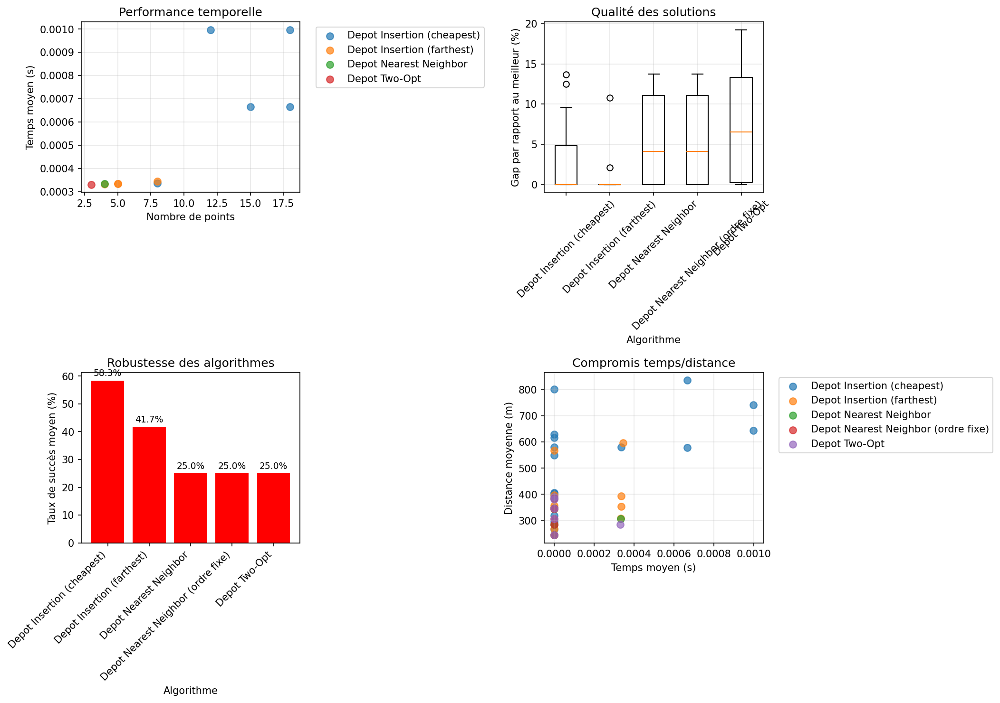

Date du benchmark: 2026-01-02 15:28:13
Ce benchmark compare les algorithmes d'optimisation des parcours de collecte dans un hangar avec contraintes de circulation.
Problème: DÉPÔT → Points de collecte → ARRIVÉE (peut être identique au dépôt)
Objectif: Identifier les algorithmes les plus performants pour l'optimisation finale.

Dépôt: (20, -10)
Arrivée: None
| Catégorie | Algorithme | Distance moyenne | Temps moyen (s) | Gap moyen (%) | Taux succès | Recommandation |
|---|---|---|---|---|---|---|
| small | Depot Insertion (cheapest) | 293.4m | 0.0000s | 6.3% if avg_gap is not None else N/A | 100.0% | 👍 Bon |
| Depot Insertion (farthest) | 288.7m | 0.0001s | 3.6% if avg_gap is not None else N/A | 100.0% | 🎯 Excellent | |
| Depot Nearest Neighbor | 298.3m | 0.0001s | 7.3% if avg_gap is not None else N/A | 100.0% | 👍 Bon | |
| Depot Nearest Neighbor (ordre fixe) | 298.3m | 0.0000s | 7.3% if avg_gap is not None else N/A | 100.0% | 👍 Bon | |
| Depot Two-Opt | 310.0m | 0.0000s | 11.0% if avg_gap is not None else N/A | 100.0% | 👍 Bon | |
| medium | Depot Insertion (cheapest) | 580.7m | 0.0003s | 2.2% if avg_gap is not None else N/A | 100.0% | 🎯 Excellent |
| Depot Insertion (farthest) | 568.0m | 0.0000s | 0.0% if avg_gap is not None else N/A | 100.0% | 🎯 Excellent | |
| large | Depot Insertion (cheapest) | 623.1m | 0.0006s | 0.0% if avg_gap is not None else N/A | 77.8% | 🎯 Excellent |
| difficult | Depot Insertion (cheapest) | 613.0m | 0.0000s | 4.6% if avg_gap is not None else N/A | 66.7% | 🎯 Excellent |
| Depot Insertion (farthest) | 358.0m | 0.0000s | 0.0% if avg_gap is not None else N/A | 100.0% | 🎯 Excellent |
Dépôt: (20, -10)
Arrivée: (60, -10)
| Catégorie | Algorithme | Distance moyenne | Temps moyen (s) | Gap moyen (%) | Taux succès | Recommandation |
|---|---|---|---|---|---|---|
| small | Depot Insertion (cheapest) | 345.6m | 0.0000s | 5.9% if avg_gap is not None else N/A | 77.8% | 👍 Bon |
| Depot Insertion (farthest) | 328.7m | 0.0002s | 0.7% if avg_gap is not None else N/A | 100.0% | 🎯 Excellent | |
| Depot Nearest Neighbor | 338.3m | 0.0000s | 4.0% if avg_gap is not None else N/A | 100.0% | 🎯 Excellent | |
| Depot Nearest Neighbor (ordre fixe) | 338.3m | 0.0000s | 4.0% if avg_gap is not None else N/A | 100.0% | 🎯 Excellent | |
| Depot Two-Opt | 339.7m | 0.0001s | 4.3% if avg_gap is not None else N/A | 100.0% | 🎯 Excellent | |
| medium | Depot Insertion (cheapest) | 617.5m | 0.0000s | 3.6% if avg_gap is not None else N/A | 66.7% | 🎯 Excellent |
| Depot Insertion (farthest) | 596.0m | 0.0003s | 0.0% if avg_gap is not None else N/A | 100.0% | 🎯 Excellent | |
| large | Depot Insertion (cheapest) | 686.7m | 0.0006s | 0.0% if avg_gap is not None else N/A | 55.6% | 🎯 Excellent |
| difficult | Depot Insertion (cheapest) | 398.0m | 0.0000s | 0.0% if avg_gap is not None else N/A | 100.0% | 🎯 Excellent |
| Depot Insertion (farthest) | 398.0m | 0.0000s | 0.0% if avg_gap is not None else N/A | 100.0% | 🎯 Excellent |
Depot Two-Opt - Offre le meilleur compromis qualité/temps avec une recherche locale.
Depot Insertion (cheapest) - Bonne qualité de solution avec temps d'exécution raisonnable.
Depot Nearest Neighbor (start_at_nearest=True) - Très rapide avec des solutions acceptables.
Combinaison Depot Nearest Neighbor + Two-Opt - Garantit toujours une solution avec amélioration locale.